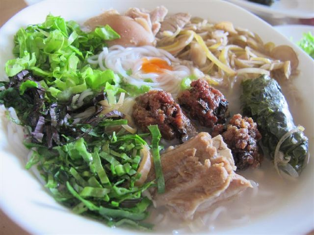

Cùng với canh cá và bún cá, bún bung (bún hoa chuối) là món ăn rất được ưa thích của người Thái Bình. Vị chát của hoa chuối, béo ngậy của thịt, vị thơm của lá xương sông sẽ khiến bạn nhớ mãi. Bún bung thường có dọc mùng, mọc, chân giò… từ lâu là món ăn ưa thích của nhiều người, phổ biến ở một vài tỉnh phía bắc. Nhưng khác với các nơi, bún bung Thái Bình không ăn kèm dọc mùng mà thay bằng hoa chuối. Đây là một trong những món ăn nổi tiếng và được nhiều người Thái Bình ưa thích.